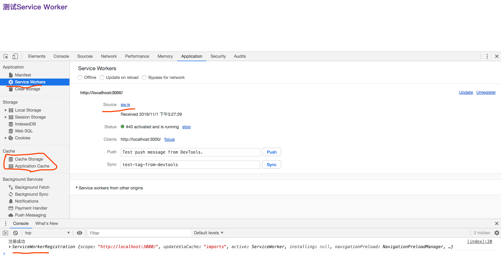
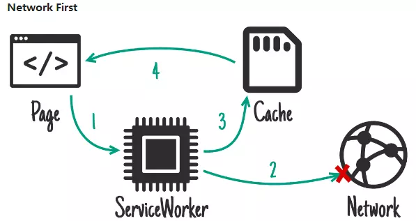

简介
首先了解一下PWA（Progressive web apps，渐进式 Web 应用）运用现代的 Web API 以及传统的渐进式增强策略来创建跨平台 Web 应用程序。
PWA 的优点PWA 是可被发现、易安装、可链接、独立于网络、渐进式、可重用、响应性和安全的。PWA中可以通过Service Worker来实现离线的应用，这个也是 PWA 中一个比较重要的环节，它们主要应用到Web App中，已获得更好的体验，并且在现在也在大规模的应用。Service Worker是一个事件驱动worker，运行在一个单独的后台进程，是PWA（ProgressiveWeb App）运行的基础。主要用于代理网页请求，可缓存请求结果；可实现离线缓存功能，也拥有单独的作用域范围和运行环境。我们以后把Service Worker简称为SW。
本文大致分为：
- SW 特性
- SW 生命周期和使用
- SW 中的缓存策略
- SW 一些注意事项
- SW 几种缓存策略
- SW 中的消息推送
- Workerbox 使用
SW 的特性
它们的运行在一个与我们页面的 JavaScript 主线程独立的线程上，并且没有对 DOM 结构的任何访问权限。
这引入了与传统 Web 编程不同的方法 - API 是非阻塞的，并且可以在不同的上下文之间发送和接收信息。
SW 使用限制
SW除了work线程的限制外，由于可拦截页面请求，为了保证页面安全，浏览器端对sw的使用限制也不少。
- 无法直接操作 DOM 对象，也无法访问
window、document、parent对象。可以访问navigator、location；SW通过响应postMessage接口发送的消息来与其控制的页面通信，页面可在必要时对DOM执行操作。 - 可代理的页面作用域限制。默认是
sw.js所在文件目录及子目录的请求可代理，可在注册时手动设置作用域范围； - 必须在
https中使用，允许在开发调试的localhost使用。
SW 主要作用
- 可以用来做缓存，以达到提升体验、节省浏览等等
- SW 是一种可编程网络代理，让您能够控制页面所发送网络请求的处理方式。
- 离线缓存接口请求及文件，更新、清除缓存内容；
- 可分配给 Service Worker 一些任务，并在使用基于 Promise 的方法当任务完成时收到结果。
- Service Worker 处于空闲状态会被终止，在下一次需要时重启。
SW 兼容性
可以通过查询service worker可以看到他在不同平台或不同浏览器中的兼容性。
SW 生命周期和使用
SW 的生命周期完全独立于网页。SW 为网页添加一个类似于 App 的生命周期，它只会响应系统事件，就算浏览器关闭时操作系统也可以唤醒 SW，这点非常重要，让Web App与 Native App 的能力变得类似了。由于是离线缓存，所以在初始安装时、更新它们的所走的生命周期是不相同。下面我们就根据这两种场景结合代码来分析它的执行步骤。SW的生命周期大致分为：注册、更新、安装成功、安装失败、激活、销毁。
使用 SW 前提条件
- 必须在
https中使用，允许在开发调试的localhost使用。 - 浏览器必须支持 SW
初始安装时
初始安装时大致流程大致如下图：
大致可以分为注册SW => 安装SW => 激活 => 空闲 => (缓存和返回请求/终止)，在初始安装时会大致分为这几个步骤，下面就按照这几个步结合代码实现。
注册 Service Worker
用户首次访问SW 控制的网站或页面时，sw.js会立刻被下载和解析。我们要在页面中写入JavaScript来注册SW。
1 | // 判断浏览器是否支持serviceWorker |
首先检浏览器是否支持 SW，如果支持就在浏览器加载后通过register().then注册sw.js，并且设置注册成功或者失败的回调函数。
注意：
register()方法的精妙之处在于服务工作线程文件的位置。SW降接收此网域上所有的事项的featch事件。
如果是 Chrome 浏览器可以通过chrome://inspect/#service-workers或者console => application => Service Worker查看是否注册成功
因为现在sw.js中我们的代码是空的，所以在浏览器中的cache stoage是空的，运行效果如下：

安装 Service Worker
在受控页面启动注册流程后，下面就是 SW 获取的第一个事件install，并且只发生一次。传递到 installEvent.waitUntil() 的一个 promise 可表明安装的持续时间以及安装是否成功。
在install中要做三件事打开缓存、缓存文件、确认所有需要的资产是否已缓存。
1 | // 在sw.js中监听对应的安装事件，并预处理需要缓存的文件 |
第一个事件为install，该事件在Worker执行时立即触发。在install的回调函数中，我们通过caches.open(CACHE_NAME)打开缓存，之后调用cache.addAll()并传入路径数组。这是一个promise链（caches.open()和chaches.addAll()。installEvent.waitUntill()放大带有promise并使用它来判断安装所花时间，以及是否安装成功。
注意： 第一个事件
install，它只能被每个 SW 调用一次。如果您更改您的 SW 脚本，则浏览器将其视为一个不同的 SW，并且它将获得自己的install事件。
如有任何文件无法下载，则安装步骤将失败。
当前的状态是在等待状态。
我们可以直接通过self.skipwaiting()让当前sw立即将状态提升到active。
当我们安装成功时，效果如下图所示：

会多了一个skipWaiting，还有在cache stroage中的当前域名下的service worker对应的缓存文件列表。这个时候我们即使刷新也不会走service worker的缓存的。
激活
SW 准备控制客户端并处理 push 和 sync 等功能事件时，您将获得一个 activate 事件。但这不意味着调用 .register() 的页面将受控制。如果第二次加载此演示（换言之，刷新页面），该页面将受控制。改写代码sw.js如下：
1 | self.addEventListener('install', () => { |
一般在书写的时候，会在install()注册之后直接通过self.skipWaiting();激活当前的SW，在activate中书写打开缓存等等的逻辑，就不会出现上面还要刷新或者手动激活的问题。效果图如下：

但是如果出现更新 SW，并且更新了缓存列表或者出现异步资源时，我们可以通过clients.claim()更新缓存列表。
clients.claim
激活 SW 后，您可以通过在其中调用 clients.claim() 控制未受控制的客户端。google developer中的一个异步加载图片的实例。下面修改代码如下：
1 | self.addEventListener('install', (event) => { |
用于处理更新缓存，新的文件。到现在我们还是没有用到serviceWorker的缓存，下面重头戏来了缓存和返回请求。
缓存和返回请求
上我们已经安装并且激活了SW，现在我们要返回一个缓存的响应。SW用户转至其他页面或刷新当前页面后，将开始接受fetch事件。
1 | self.addEventListener('fetch', function (event) { |
在定义的fetch事件中，我们在event.respondWith()中传入来自caches.match()的一个promise。caches.match()这个方法检视该请求，并从服务工作线程所创建的任何缓存中查找缓存的结果。如果命中返回缓存值，否则，将调用fetch以发出网络请求。运行效果如下：
如果我们想把新的请求也缓存掉，修改代码如下：
1 | self.addEventListener('fetch', function (event) { |
执行操作如下：
- 在
fetch请求中添加对.then()的回调。 - 获得响应后，确保响应有效。、检查并确保响应的状态为 200。、确保响应类型为 basic，亦即由自身发起的请求。 这意味着，对第三方资产的请求也不会添加到缓存。
- 如果通过检查，则克隆响应。
没有缓存新请求时效果如下：
当使用我们下面的代码时，效果图如下：
即使异步请求的png图片也被加入了缓存中。
更新 SW
在以下情况下会触发更新：
- 导航到一个作用域内的页面。
- 更新
push和sync等功能事件，除非在前 24 小时内已进行更新检查。 - 调用
.register()，仅在SW网址已发生变化时。
当触发更新时，会经过大致如下步骤：
- 更新您的服务工作线程
JavaScript文件。 用户导航至您的站点时，浏览器会尝试在后台重新下载定义SW的脚本文件。 如果SW文件与其当前所用文件存在字节差异，则将其视为新SW。 - 更新的
SW与现有SW一起启动，并获取自己的install事件。 - 此时，旧
SW仍控制着当前页面，因此新SW将进入waiting状态。 - 如果
新 Worker出现不正常状态代码（例如，404）、解析失败，在执行中引发错误或在安装期间被拒，则系统将舍弃新 Worker，但当前 Worker 仍处于活动状态。 - 安装成功后，
更新的 Worker 将 wait，直到现有 Worker控制零个客户端。（注意，在刷新期间客户端会重叠。） self.skipWaiting()可防止出现等待情况，这意味着Service Worker在安装完后立即激活。
更新 SW 代码
更新一个叫做sw_cache_v2的新的SW缓存，代码如下：
1 | const CACHE_NAME = 'sw_cache_v2'; |
代码执行效果如下图所示：
整个过程我们大致经过了install => waiting => activate三个过程。
更新 Install
我们在代码中把sw_cache_v1更改为sw_cache_v2，我们重新Install了一个新的缓存sw_cache_v2，并且通过添加了一个缓存进去cache.add('index_copy.png')。
更新 Waiting
如果新的缓存安装成功SW后，更新的SW将延迟激活，直到现有SW不再控制任何客户端。此状态为waiting，这是浏览器确保每次只运行一个SW版本的样式。
激活 Activate
旧 SW 退出时将触发 Activate，新 SW 将能够控制客户端。此时，您可以执行在仍使用旧 Worker 时无法执行的操作，如迁移数据库和清除缓存。
在上面的演示中，我维护了一个期望保存的缓存列表，并且在 activate事件中，我删除了所有其他缓存，从而也移除了旧的 sw_cache_v1 缓存。
不要更新以前的版本。它可能是许多旧版本的
SW。
如果您将一个 promise 传递到 event.waitUntil()，它将缓冲功能事件（fetch、push、sync 等），直到 promise 进行解析。因此，当您的 fetch 事件触发时，激活已全部完成。
Cache storage API属于“源存储”（如localStorage和IndexedDB）。如果您在同源上运行许多网站（例如，yourname.github.io/myapp），请注意，不要删除其他网站的缓存。为避免此问题，可以为您的缓存名称提供一个在当前网站上具有唯一性的前缀（例如，myapp-static-v1），并且不要删除缓存，除非它们以 myapp- 开头。
跳过等待阶段 skipWaiting
等待阶段表示您每次只能运行一个网站版本，但如果您不需要该功能，您可以通过调用 self.skipWaiting() 尽快将新 SW 激活。
这会导致您的 SW 将当前活动的 Worker 逐出，并在进入等待阶段时尽快激活自己（或立即激活，前提是已经处于等待阶段）。这不能让您的 Worker 跳过安装，只是跳过等待阶段。skipWaiting() 在等待期间调用还是在之前调用并没有什么不同。一般情况下是在 install 事件中调用它：
1 | self.addEventListener('install', (event) => { |
与 clients.claim() 一样，它是一个竞态。
skipWaiting()意味着新 Service Worker 可能会控制使用较旧Worker加载的页面。这意味着页面提取的部分数据将由旧 Service Worker 处理，而新 Service Worker 处理后来提取的数据。如果这会导致问题，则不要使用skipWaiting()。
手动更新 update
当页面刷新或者执行功能性事件时，浏览器会自动检查更新，其实我们也可以手动的来触发更新：
1 | navigator.serviceWorker.register('/sw.js').then((reg) => { |
如果你希望你的用户访问页面很长时间而且不用刷新，那么你可以每个一段时间调用一次update()。
避免改变 SW 的 URL
你可能会考虑给每个 SW 不同的 URL。千万不要这么做！在 SW 中这么做是“最差实践”，要在原地址上修改 SW。
举个例子来说明为什么：
index.html注册了sw-v1.js作为SW。sw-v1.js对index.html做了缓存，也就是缓存优先（offline-first）。你更新了
index.html重新注册了在新地址的 SWsw-v2.js.
如果你像上面那么做，用户永远也拿不到sw-v2.js，因为index.html在sw-v1.js缓存中，这样的话，如果你想更新为sw-v2.js，还需要更改原来的sw-v1.js。
SW 一些注意事项
这里主要分为：
- 更新的小技巧
- sync 事件
更新小技巧
SW 生命周期是专为用户构建的，这就给开发工作带来一定的困难。幸运的是，我们可通过以下几个工具解决这个问题：
Update on reload

这可使生命周期变得对开发者友好。每次浏览时都将：
- 重新提取
SW。 - 即使字节完全相同，也将其作为新版本安装，这表示运行
install事件并更新缓存。 - 跳过等待阶段，以激活新
SW。 - 浏览页面。这意味着每次浏览时（包括刷新）都将进行更新，无需重新加载两次或关闭标签。
Skip waiting
如果您有一个 Worker 在等待，您可以按 DevTools 中的“skip waiting”以立即将其提升到“active”。同时也可以通过self.skipWaiting()来实现。
Shift-reload
如果您强制重新加载页面 (shift-reload)，则将完全绕过 SW。页面将变得不受控制。此功能已列入规范，因此，它在其他支持 SW 的浏览器中也适用。
处理更新周期
为支持尽可能多的模式，整个更新周期都是可观察的：
1 | navigator.serviceWorker.register('/sw.js').then((reg) => { |
sync 事件
Sync事件让你可以先将网络相关任务延迟到用户有网络的时候再执行。这个功能常被称作“背景同步”。这功能可以用于保证任何用户在离线的时候所产生对于网络有依赖的操作，最终可以在网络再次可用的时候抵达它们的目标。
代码示例如下
1 | navigator.serviceWorker.ready.then((registration) => { |
我们指定在一个按钮的点击事件里，在一个全局的 ServiceWorkerRegistration 对象身上调用 sync.register。
简单地讲，任何你需要确保在有网络时立刻执行或者等到有网再执行的操作，都需要注册为一个sync事件。
这操作可以是发送一个评论，或者获取用户信息，在 SW 的事件监听器里会如下定义：
1 | // sw.js |
我们监听一个 sync 事件，然后在 SyncEvent 对象上检查 tag 是否匹配我们在点击事件里所设定的 'submit'。
如果多个 tag 标记为 submit 的 sync事件被注册了，sync 事件处理器只会运行一次。
所以在这个例子里，如果用户离线了，然后点击按钮 7 次，当网络再次连上，所有的sync注册都会合而为一，sync事件只会触发一次。
Sync 事件是什么时候触发
如果用户的网络时联通的，那么sync事件会立刻触发并且立刻执行你所定义的任务。
而如果用户离线了，sync 事件会在网络恢复后第一时间触发。
SW 几种缓存策略
- 渐进式缓存
- 仅使用缓存
- 仅使用网络
- 缓存优先
- 网络优先
- 速度优先
渐进式缓存
对于在install中发现没有缓存，页面又依赖但又不经常变化的资源，可以在页面打开或发生用户交互时触发fetch然后使用fetch api再去网络拉取，将返回正常的response缓存起来以便下次使用。
progressive-cache
1 | self.addEventListener('fetch', function (event) { |
仅使用缓存
在fetch事件中，仅去匹配资源，若匹配失败，表现出来的就是前端页面对于该 资源加载失败。这里容错性比较差，适用于页面资源都是静态资源的，且不能使用不影响安装的资源预缓存。
cache-only
1 | // SW请求拦截事件 |
仅使用网络
在fetch事件中，仅将request重新抽出用fetch去网络加载并返回给前端页面。适用于资源大多是动态资源、实时性要求高的场景。
network-only
1 | // SW请求拦截事件 |
缓存优先
简单的资源缓存中使用的就是缓存优先策略，先去缓存匹配，匹配失败折回网络，这算是最常用、容错性能好的一种策略。
firstCache
1 | function firstCache(cacheName, request) { |
网络优先
在fetch事件中先去网络fetch，当出现服务器故障或者网络不良时，折回本地缓存，目的是为了展示最新的数据，对实时性要求比较高但又能够带来良好体验的应用，比如天气类型应用。
firstNet
1 | function firstNet(cacheName, request) { |
速度优先
在fetch事件中同时发起本地缓存匹配及网络请求，谁先返回使用谁的，该方案适用于对性能要求比较高的站点，缩短了缓存优先策略中有可能缓存中没有资源再折回网络的时间消耗。
1 | function networkCacheRace(cacheName, request) { |
现在我们可以在 sw.js 中更改一下缓存策略，从而达到最理想的效果。
1 | // sw.js |
SW 中的消息推送
Push 消息
在SW里，通过 push 事件以及浏览器的 Push API，可以实现push消息的功能。
在说道web push消息的时候，其实涉及到两个正在完善中的技术：消息提醒 与 信息推送。
消息提醒
用SW实现消息提醒挺简单直接：
1 | // app.js |
1 | // sw.js |
你需要先向用户寻求让你的网页产生消息提醒的权限。之后，你就可以弹出提示信息，然后处理某些事件，比如用户把消息关掉的事件。
信息推送
信息推送涉及到利用浏览器提供的Push API以及后端的配合实现。要讲解如何使用Push API完全可以再写一篇文章，不过基本的套路如下：

这是个略微复杂难懂的过程，已经超出这篇文章的讨论范围。
更好的方案 - Workbox
什么是 Workbox ?
Workbox is a library that bakes in a set of best practices and removes the boilerplate every developer writes when working with service workers.
其大概意思是它对常见的 SW 操作进行了一层封装, 根据最佳实践方便了开发者的使用。因此在我们快速开发自己的 PWA 应用时使用 Workbox 是最合适不过的了。
它主要有以下几大功能 :
- Precaching ~ 预缓存
- Runtime caching ~ 运行时缓存
- Strategies ~ 缓存策略
- Request routing ~ 请求路由控制
- Background sync ~ 后台同步
- Helpful debugge
简单应用
直接修改sw.js的代码，如下：
1 | // sw.js |
如果浏览器支持，可以直接引用 API 接口：
precaching可以在注册成功后直接缓存的文件；routing匹配符合规则的url与strategies合作来完成文件的缓存。
代码如下：
1 | // 注册完成后，即缓存对应的文件列表 |
workbox 缓存策略
workbox.strategies缓存策略有：
staleWhileRevalidate使用已有的缓存，然后发起请求，用请求结果来更新缓存；networkFirst先发起请求，请求成功后会缓存结果。如果失败，则使用最新的缓存；cacheFirst总是先使用缓存，如果无匹配的缓存，则发起网络请求并缓存结果；networkOnly强制发起请求；cacheOnly强制使用缓存。
官方也有给了实现逻辑如下。
Cache Only
只从缓存中读取，当缓存中没有数据时，读取失败。
NetWork Only
只通过网络请求进行资源请求，若请求失败，则返回失败响应。

NetWork First
- 优先网络请求
- 网络请求成功时，将结果写入缓存，并将结果直接返回。
- 网络请求失败时，从缓存中读取结果，若读取结果，则返回，若未读取到，则请求失败。
不难看出，这种策略是为了保证在第一次请求成功之后，后面多次的请求始终都能返回结果。

1 | workbox.routing.registerRoute( |
Cache First
- 优先从缓存中读取结果
- 若缓存中不存在结果，则进行网络请求
- 网络请求成功时，将结果写入缓存并返回
- 网络请求失败时，返回失败响应

1 | workbox.routing.registerRoute( |
Stale-While-Revalidate
- 优先查缓存，并同时发起网络请求
- 若缓存命中且网络请求成功，返回缓存结果，并更新缓存（下次从缓存中读取的数据就是最新的了）
- 若缓存未命中，则看网络请求是否成功，成功则更新缓存并返回结果，失败则返回失败响应。
1 | workbox.routing.registerRoute( |
总结
在本篇文章中详细的记录了有关SW的主要功能和能给我们带来的好处。一般在开发中还是推荐使用workbox，最后如果个人有兴趣的可以自己编写示例来验证文章中的代码示例。
SW 主要作用
- 可以用来做缓存，以达到提升体验、节省浏览等等
- SW 是一种可编程网络代理，让您能够控制页面所发送网络请求的处理方式。
- 离线缓存接口请求及文件，更新、清除缓存内容；
- 可分配给 Service Worker 一些任务，并在使用基于 Promise 的方法当任务完成时收到结果。
- Service Worker 处于空闲状态会被终止，在下一次需要时重启。
SW 几种策略
- 渐进式缓存
- 仅使用缓存
- 仅使用网络
- 缓存优先
- 网络优先
- 速度优先
参考
Service Worker：简介 | Web Fundamentals | Google Developers
Service Worker 生命周期 | Web Fundamentals | Google Developers
用 Service Worker 实现前端性能优化
service worker 实现离线缓存 > 【前-workbox-网络摘要】WorkBox 缓存策略